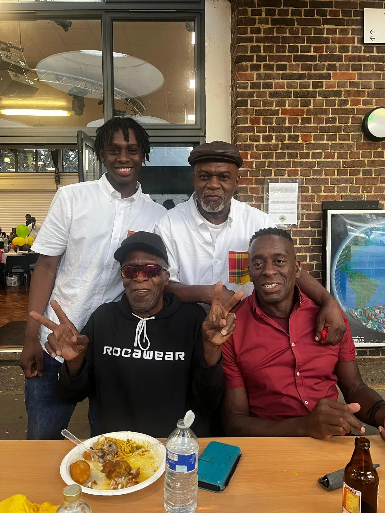

Kent in his youthKent in his youthKent in his youthKent in his youthKent in his youthKent in his youthKent in his youthKent in his youthKent in his youthKent in his youthKent in his youthKent in his youthKent in his youthKent in his youthKent in his youthKent in his youthKent in his youthKent in his youthKent in his youthKent in his youthKent in his youth

Kent in his youthKent in his youthKent in his youthKent in his youthKent in his youthKent in his youthKent in his youthKent in his youthKent in his youthKent in his youthKent in his youthKent in his youthKent in his youthKent in his youthKent in his youthKent in his youthKent in his youthKent in his youthKent in his youthKent in his youthKent in his youthKent in his youthKent in his youthKent in his youthKent in his youthKent in his youthKent in his youth